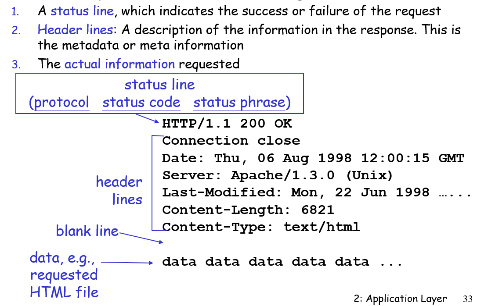
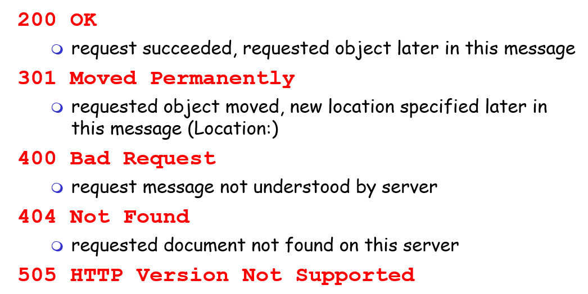
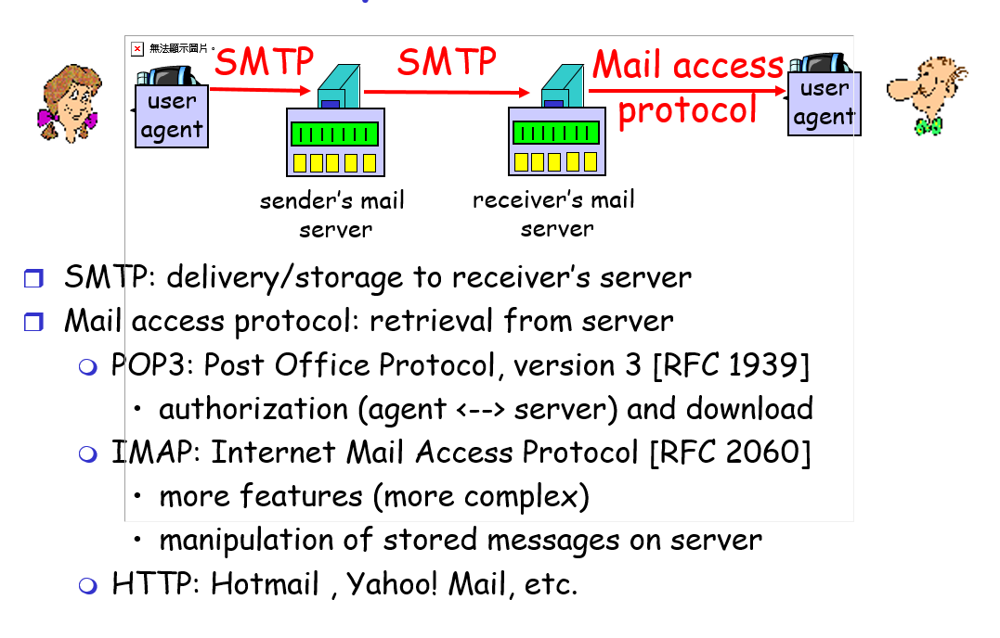
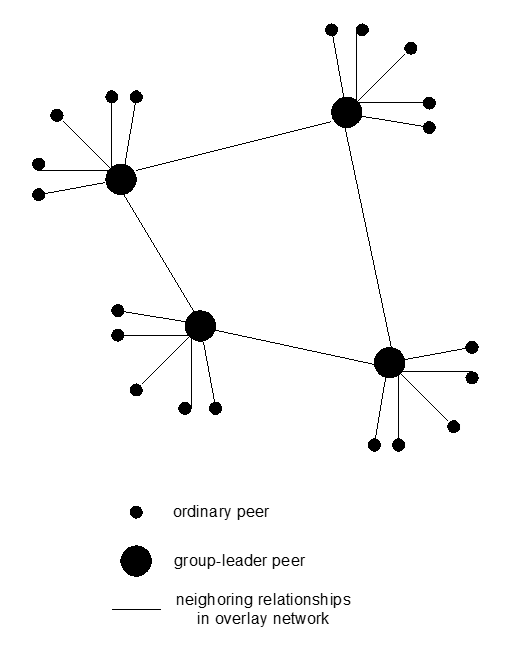

do not communicate directly with each other 客戶之間要由server轉介
Page 2-9 Pure P2P architecture
no always on server 沒有server
arbitrary end systems directly communicate 直接溝通
peers are intermittently connected and change IP addresses 可動態IP、暫時連結
example: Gnutella (P2P代表之一)
優 : Highly scalable 可以容易擴充規模
缺 : But difficult to manage 難以維護
Page 2-10 Hybrid of client-server and P2P (混合式)
Napster
File transfer P2P (傳檔案不經過server)
File search centralized: (server負責看誰有檔案、分配)
Peers register content at central server
Peers query same central server to locate content
Instant messaging
Chatting between two users is P2P (client P2P)
Presence detection/location centralized: (server)
User registers its IP address with central server when it comes online
User contacts central server to find IP addresses of buddies
Page 2-11 Processes communicating
Same host
two processes communicate using inter-process communication (defined by OS).
Dif host
processes in different hosts communicate by exchanging messages
Client process:
process that initiates communication
Server process:
process that waits to be contacted
P2P
applications with P2P architectures have client processes & server processes
Page 2-12 Processes communicating across network
Socket
process sends/receives messages to/from its socket
API : choose transport protocol, then a few parameters (IP, port ...)
Addressing processes
For a process to receive messages, it must have an identifier
host has a unique 32-bit IP address
port (16-bit) numbers associated with the process on the host
IP代表host的位置 、 port 代表host全部的process中的哪一個
App-layer protocol defines
Types of messages : req or res
Syntax of message : 格式，哪個位置代表什麼訊息
Rules for when and how processes send & respond : 回應的規則
Public-domain protocols:
defined in RFCs (定義標準組織)
allows for interoperability(互通性、相容性)
eg, HTTP, SMTP (標準)
Proprietary protocols:
eg, KaZaA (非標準)
Page 2-15 What transport service does an app need
Data loss
some apps (e.g., audio) can tolerate some loss
other apps (e.g., file transfer, telnet) require 100% reliable data transfer
Timing
延遲
Bandwidth
multimedia may require minimum amount of bandwidth to be “effective”
Page 2-17 Internet transport protocols services
TCP
connection-oriented: 使用前要先建連線
reliable transport : 可靠、不能掉封包
flow control: sender won’t overwhelm receiver
congestion control: 擁擠控制，掉封包就放慢
不保證傳送的時間、速度、頻寬
UDP
不可靠的資料傳送
沒有提供 : 建連線、流量控制、擁擠控制、傳送時間、速度、頻寬
Page 2-20 Web and HTTP
Web Page
base HTML-file
many objects
URL (Uniform Resource Locators)
HTTP : hypertext transfer protocol
Web’s application layer protocol
client/server model
used TCP :
client initiates TCP connection (creates socket) to server, port 80
server accepts TCP connection from client
send messages
stateless : 不會記之前的req
RTT : 小型回應持間
Nonpersistent HTTP
At most one object is sent over a TCP connection.
一個TCP連線只能傳送一個object，送完就關閉連線
2 RTTs per object :一個建連線一個要求object
Persistent HTTP
一個TCP 連線可以傳送多個objects
without pipelining : one RTT for each object
with pipelining : 幾乎只要one RTT
HTTP request message
HTTP response message


Page 2-37 User-server state: cookies
Four components of cookie technology:
cookie header line in the HTTP response message
cookie header line in HTTP request message
cookie file kept on user’s browser
back-end database at Web site
What cookies can bring:
authorization
shopping carts
recommendations
user session state (Web e-mail)
Page 2-40 Web caches (proxy server)
Proxy server : 暫存伺服器
client 連到proxy server再由proxy server 決定要不要連到主伺服器
好處:
reduce response time 縮短回應時間
reduce traffic 減少流量、分散流量
Cach example
Page 2-47 FTP : the file transfer protocol
FTP client contacts FTP server at port 21， 以TCP為底
Will maintains “state”: current directory, earlier authentication
Total 2 connection :
control connection (port21) (also called “out of band”)
傳送 : username, password, file transfer command
data connection (port20)
server open a TCP data connection when receive file transfer command
傳送檔案
Page 2-51 Electronic Mail
User Agent
read mail
Mail Servers
mailbox contains incoming messages for user
message queue of outgoing mail messages
SMTP
Simple Mail Transfer Protocol (port25)
delivery/storage to receiver’s server
use TCP
three phases:
hand shaking
transfer messages
close
command/response interaction
commands: ASCII text
response: status code and phrase
Mail access protocol
retrieval from server
POP3: Post Office Protocol, version 3 [RFC 1939]
authorization (agent <--> server) and download
將mail存到自己的電腦裡做處理
Client opens a TCP connection to the mail server on port 110
authorization phase : 輸入帳密
transaction phase : 輸入指令
update phase : 更新(刪除剛剛選的信)
2. IMAP: Internet Mail Access Protocol [RFC 2060]
mail在receiver server裡面處理
3. HTTP: Hotmail , Yahoo! Mail, etc.

Page 2-67 DNS: Domain Name System
A distributed database
An application-layer protocol
Hostname to IP address translation
Host aliasing :
Canonical : Relay1.west-coast.enterprise.com
alias names : www,enterprise,com
Distributed, Hierarchical Database
root name servers
top level name servers ( .com .org .net .edu .jp .uk)
authoritative name servers:
local name servers: (大公司、學校)
Recursive queries
recursive query
查一個，沒有就叫他幫忙查
iterated query
查一個，沒有就自己找下一個
Page 2-88 P2P file sharing
All peers are servers = highly scalable!
Query flooding: 廣播看誰有檔案
overlay network: graph
edge between peer X and Y have a TCP connection
Peer joining
find some other peer in network: use list of candidate peers
attempts to make TCP with peers on list until connection setup
Exploiting heterogeneity: KaZaA (一種P2P)
use hash to avoid same file content

Page 2-98 Socket
socket :
a host-local, application-created, OS-controlled interface (a “door”) into which
application process can both send and receive messages to/from another application process
use TCP (bytes stream)
Client must contact server : server process must first be running
Client contacts server by IP address, port number of server process
When contacted by client : server TCP creates new socket
use UDP (packets)
no “connection” between client and server
no handshaking
sender put IP address and port in each packet
server must extract IP address, port of sender from received packet
data may be received out of order, or lost
Chapter 3 Transport Layer
Multiplexing/demultiplexing
Multiplexing 選擇往下送的socket
Demultiplexing 選擇往上送的socket(根據port)
Both network layer need IP address
UDP
UDP socket : 需要source port & destination port , 可共用
UDP check sum to detect error
how to recover from errors:
acknowledgements (ACKs): receiver tells sender that packet is OK
negative acknowledgements (NAKs): receiver tells sender that packet is errors